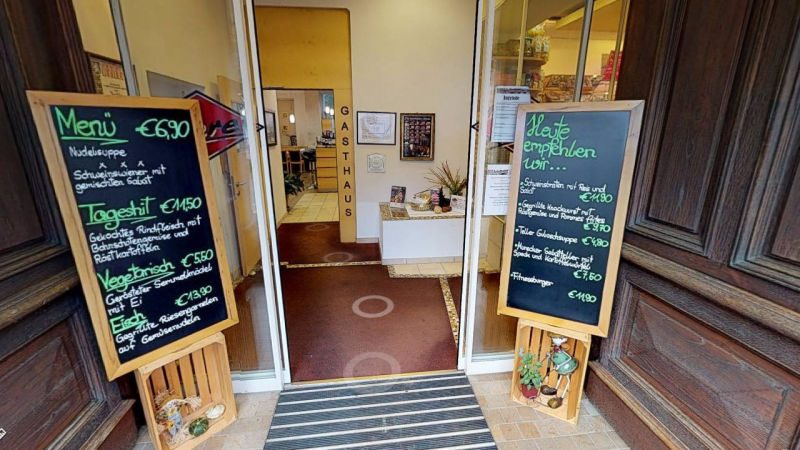

Adresse
01 Kontakt
Hauptplatz 16, mitten in Mureck.
Gasthaus und Fleischerei liegen im selben Haus. Rufen Sie an, schreiben Sie uns oder kommen Sie während der Öffnungszeiten vorbei.
Direkt
Anrufen & schreiben
Tel. +43 3472 2109
Mobil Jörg Oberer 0650 5996336
j.oberer@aon.at
Zeiten
Gasthaus & Geschäft
Gasthaus Mo – Fr 8.00 – 15.00 Uhr, Küche bis 14.30 Uhr, Sa/So/Feiertag geschlossen.
Fleischerei Mo – Fr 7.00 – 15.00 Uhr, Sa 7.00 – 12.00 Uhr.

02 Anfahrt
So finden Sie uns.
Das Haus steht direkt am Hauptplatz von Mureck, im Süden der Steiermark an der Mur. Parkplätze gibt es rund um den Hauptplatz; der Gastgarten liegt auf der ruhigen Seite in Richtung Auwald.
Reise- und Busgruppen bitten wir um Voranmeldung, damit Küche und Service vorbereitet sind.
Schematische Skizze, keine maßstabsgetreue Karte.
03 Häufige Fragen
Gut zu wissen.
Ist das Gasthaus am Wochenende offen?
Nein. Das Gasthaus ist Montag bis Freitag von 8.00 bis 15.00 Uhr geöffnet, die Küche bis 14.30 Uhr. Samstag, Sonntag und an Feiertagen bleibt es geschlossen. Die Fleischerei hat zusätzlich am Samstag von 7.00 bis 12.00 Uhr offen.
Wo finde ich das Tagesmenü?
Die Tageskarte wechselt täglich. Sie steht auf unserer Facebookseite – und künftig direkt hier; wer mag, bekommt sie per E-Mail.
Kann ich mit einer Busgruppe kommen?
Sehr gerne, wir bitten nur um Voranmeldung. Auf Wunsch stellen wir eine eigene Buskarte zusammen.
Macht ihr Catering außer Haus?
Ja. Wir grillen und kochen in Ihrem Garten oder bei Ihrer Feierlokation und statten die Feier mit Tellern, Gläsern und Besteck aus. Details auf der Seite Catering & Feiern.
Kann ich Fleisch und Wurst vorbestellen?
Ja – Brötchen, Häppchen, Fingerfood, Beeftartar, Roastbeef und Steakzuschnitte nach Wunsch. Am einfachsten über das Vorbestellformular.
Woher kommt das Fleisch?
Wir verarbeiten ausnahmslos Fleisch aus der Steiermark. Schinken und Wurstwaren produzieren wir selbst, nach traditionellen Familienrezepten.
04 Nachricht
Schreiben Sie uns.
Ob Reservierung, Vorbestellung, Feier oder Bewerbung – wir melden uns persönlich zurück. Das Haus wird von Jörg und Maria Oberer geführt, die Anfragen landen direkt bei der Familie.
Fleischerei und Gasthaus Oberer, Hauptplatz 16, 8480 Mureck.